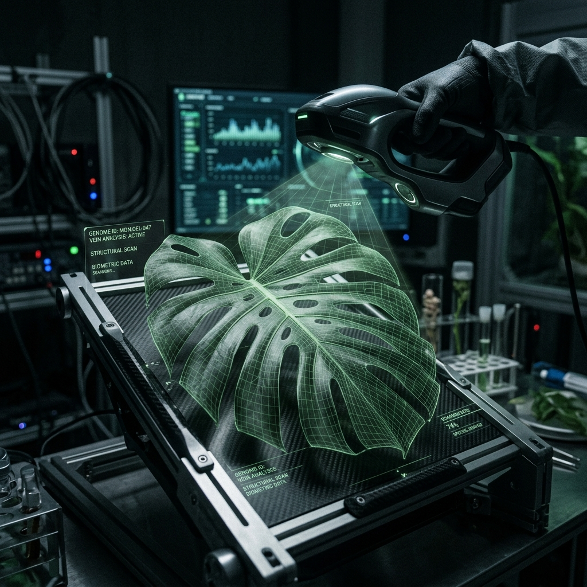

Scan Log
Monitoring…—
Analytics Dashboard
Real-time diagnostic metrics & historical data · ● Live
Measured from /predict responses
Scan History
All persisted scans · ● Supabase Cloud —
No scans yet
Run a scan from Home — every result is persisted to Supabase and listed here.
Garden Command Center
Live zone map · devices · alerts · ● Live Simulation Mode —
Control Center
Live system status · scanner · sensors · session · ● Checking…
When ON, a small DEMO chip appears in the topbar and the dashboard reads from realistic cucumber fixtures (24°C · 62% · 28k lux · pH 6.4 · Powdery Mildew @78%).
Live GET /devices/diagnostics · per-device freshness, retry counters, reachability.
Clears zones, notifications, and profile cache — not scanner settings.
Profile
Plant focus · Local MVP session · ● Live —
OPERATOR · SESSION
- User
- demo_user
- Zone
- Zone Alpha
- Device
- esp32_001
- Active
- Session active now
AI ASSISTANT SUMMARY
- Latest scan
- —
- Zone
- —
- Environment
- —
🧠 Run a scan to generate recommendations.
No scan data yet — run a plant scan to activate AI insights.
PLANT PROFILE
Cucumber
cucumber_001 · Zone Alpha
—
RECENT SCANS
PLANT HEALTH DETAILS
- Session
- Local MVP
- Camera
- —
- Last scan
- —
Advanced runtime
- Backend URL
- —
- Uptime
- —
- Analytics
- —
- Model
- —